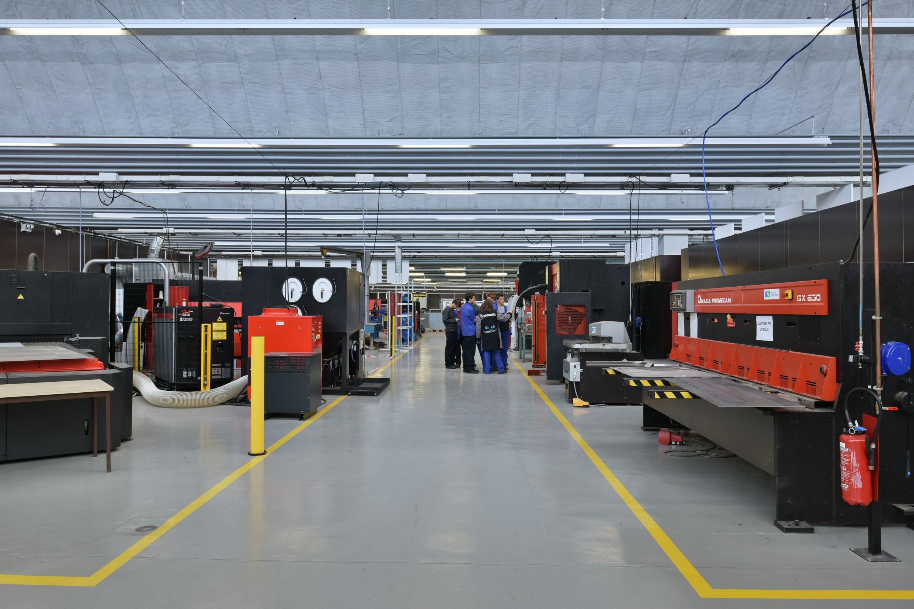
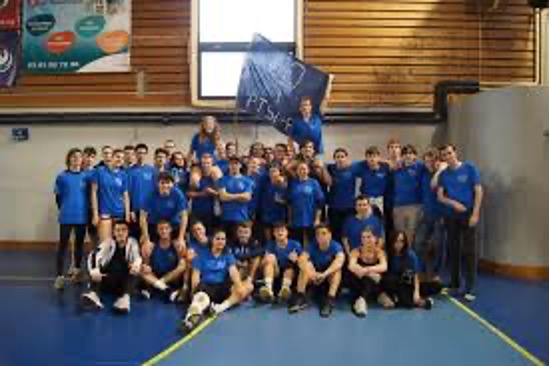

Academic Journey
Arts et Métiers ParisTech
Bordeaux, France
Combined BS × MS Engineering Degree
Sept 2024 – July 2027
3.94
GPA / 4.0
Engineering degree with a thorough training in physics, mechanical engineering, fluid and solid mechanics, industrial engineering and computer science. Also trained in business management and strategy.
Mechanical Engineering
Industrial Engineering
Computer Science
Product Design
Award for Outstanding Academic Achievement


CPGE – Lycée Jules Haag
Besançon, France
PTSI/PT (Physics & Engineering)
Sept 2022 – July 2024
4.0
GPA / 4.0
Intensive two-year preparatory program for top French engineering schools.
Advanced Mathematics
Physics
Engineering Sciences
Computer Science
